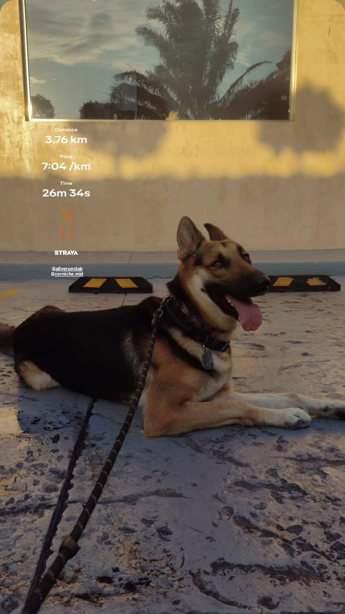
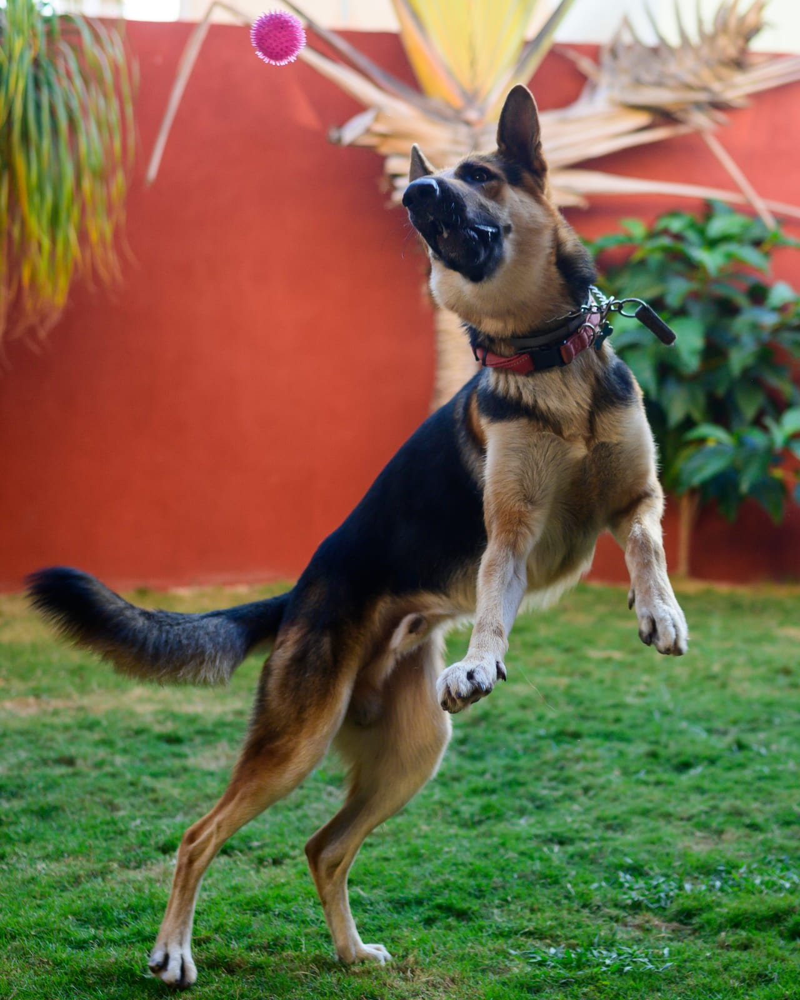
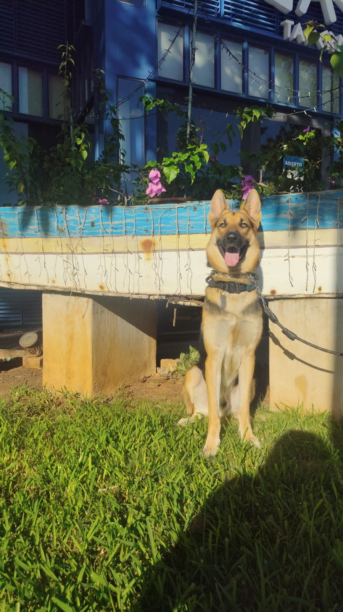

📌 Basic Information
- Complete name: Papo García Alonzo
- Breed: German Shepherd (a mix of working and show lines)
- Sex: Male
- Birthday: April 20
- Age: 3 years old
🐾 About Papo
Papo is a loyal, loving, and energetic German Shepherd with a wonderful personality. He is incredibly intelligent and always eager to spend time with his family. Whether he is playing, training, or simply relaxing nearby, Papo enjoys being involved in everything that happens around him.
Although he can be a little mischievous from time to time, he is best known for his affectionate nature and his strong bond with the people he loves. He is also naturally protective, making him both a great companion and a trustworthy guardian.
❤️ What Makes Papo Special
Papo's greatest qualities are his intelligence and the love he shows every day. He learns new things very quickly and genuinely enjoys training, making every session both productive and fun.

He knows several commands and tricks, including sitting, lying down, giving his paw, playing hide-and-seek, walking politely on a leash without pulling, and running beside his family while staying under control.
His eagerness to learn and cooperate reflects both his intelligence and his strong bond with his family.
Beyond his abilities, Papo has many favorite things that make him unique. He absolutely loves chicken, beef, ham, and, as a special treat, a Starbucks Puppuccino.

His favorite toys are a ball and his stuffed penguin, Pingüi, and one of his favorite places to relax is under the desk, where he enjoys staying close to his family. He is happiest when going for walks at the park, where he can explore, play, and spend quality time with the people he loves.
Whether he is learning a new trick, chasing a ball, cuddling with Pingüi, or enjoying a Puppuccino after a walk, Papo brings joy, loyalty, and unconditional love to everyone around him. To us, he is much more than a dog—he is a beloved member of our family and one of our best friends.

📸 Social Media
To see more pictures of Papo, make sure to follow his Instagram .